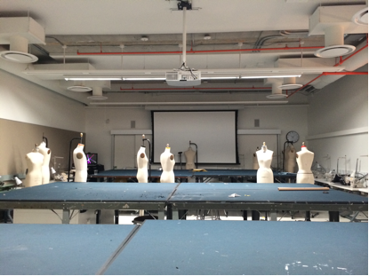
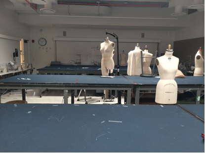

Classroom Inequality at the University Center:
Parsons classes & students dominate new building
Elizabeth Wu

Vini Jose walks into a classroom at 63 Fifth Avenue, one of a hundred Parsons classrooms in the University
Center of The New School designed by Skidmore, Owings & Merill (SOM). Jose is one of the lucky Parsons
students that have access to the new building that students from other divisions envy, for students at
Eugene Lang College the liberal arts division, having a class at the University Center is rare.
According to Sam Biederman, director of communications at The New School the registrar's office says
there are 25 Lang courses registered at the University Center, while there are roughly 400 Parsons
courses.
"As a point of clarification there are no Lang classrooms in the University Center and neither are there
Parsons classrooms, NSPE classrooms, NSSR classrooms, Mannes classrooms, or indeed any classrooms
dedicated to a particular part of the university." Biederman said. "All the rooms are designed for utmost
flexibility from semester to semester, reflective of the University Center's universitywide purpose."
Lia Gardner, vice president for design, construction and facilities management at The New School, who is
credited with making final decisions about classroom purpose and use for the University Center could not
be reached in time for comment.
As a private university, funding for the new building came from the Kerrey Administration and student
tuition. Of the school’s 8 divisions, Parsons provides the most funding. Lang BA students pay $20,275 for
tuition and fees a semester, while Parsons BFA Fashion students $21,040, only $765 more. Although
Parsons students lost their old 560 building at Seventh Avenue, not all Lang students think its fair that they
are not able to familiarize themselves with the new building or access its facilities. Parsons students have
access to state of the art computers and facilities while Lang students are still working with an old building
from the 1980s with computers that run Mac on PCs.
"I'd like to have more classes there (at the UC)." said Rafaella Gunz, a sophomore at Lang. "I know
practically nothing about the new building and I'd love the opportunity to be able to get to know it more by
having classes there." said Gunz.
Laura Malagon, a sophomore at Lang said she feels “It’s really annoying that more Lang classrooms aren’t
at the UC.” because the Parsons students have more access to the building.
Malagon’s Intro to Art History and Visual Studies course at Lang is the only class she has at the new
building. “I have art history there only because the teacher asked for a room change.” she said.
Though some like Professor Robert Buchanan agree that seminar classes don't require as many advanced
facilities as design classes. Seminars require discussions and have less need for drafting tables,
mannequins and sewing machines.
Many Parsons students also come to the University Center on weekends to do homework because they
don’t own sewing machines.
Parsons has 4,200 students including undergraduates and graduates while Lang has 1,439. For every Lang
student there are four Parsons students.
Others like Charlotte Woods, a senior at Lang were less concerned "I don't care. I haven't had a single
class in the new building and it doesn't bother me."
Sean Carrie, a senior at Lang said “It doesn't bother me. It's a space consideration made by the
administration because they can see the big picture and we can't.” suggests Carrie.
Carrie said “I don't care about the new building very much, it isn't designed in a very social way, it's all
hallways and elevator lobbies. At least Lang has an open courtyard.”
Rob Buchanan also said the administration did not want to give the University Center a centralized meeting
spot to prevent student from staging protests. “The administration was suspicious, if they had an open
commons in the new building what that might lead to.” said Buchanan.
Carrie also thinks “there are a dozen far more important issues that students should be 'mad' about then
whining about whether they get to have a class in the shiny new building.”
Of the small number of Lang classes taking place at the University Center, the science labs take up a great
majority, with the addition of the new Food Studies program.
Buchanan feels most teachers didn’t have a say in the classrooms they wanted in the new building, his
proposal for an open classroom, complete with a bike shed/fixing station in order for students and the
community to interact was rejected.
Buchanan felt infuriated the consultation time of roughly a year was wasted. “I felt that way and a lot of
people did too.”
Buchanan said there were expensive consultation services from design firm IDEO to help the school decide
how to utilize the space of the new building best.
“They asked us what we teach and what we need to teach our courses.” said Buchanan.
“The school and designers asked all teachers what they would like to see in the new building, classrooms,
etc. But when it came down to it, the decision was made from above.” he said.
“I understand the design of the new building, when you have big spaces you want to make studios.” said
Buchanan.

Vini Jose, a Parsons associate degree student in her last year has all her classes at the University Center
except one, she said “There are a few classes for fashion design people because they need tables (drafting
tables for pattern making), but there are other classes where we have presentations that look like regular
classrooms.”
Jose also said that although the new building has a lot of Parsons class, there are only two of which are
open studios, where Parsons fashion students can do homework when other classrooms are full.
Classroom ratio differences between Lang and Parsons mark a deeper divide. Last May, the New York Post
wrote the school was in early stages for talks to name the university Parsons.
The administration said they are still working on the matter to develop a new name for the school that will
help people realize Parsons and The New School are actually one school, which a lot of people don’t
realize.
Parsons gets a lot of love from the administration, because its the one division of The New School that
provides the most funding, but it has left other divisions of The New School feel left out.